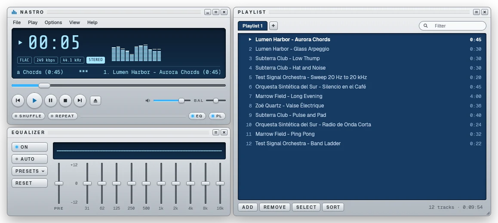
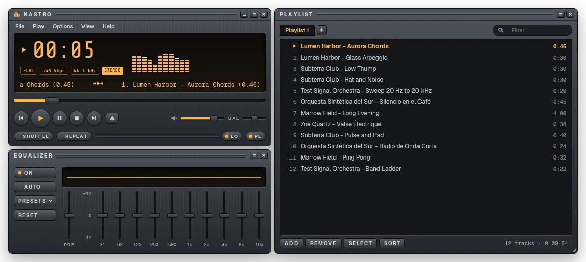

Docked panels
The player, a 10-band equalizer and the playlist snap to each other with magnetic edges and move as one group, or come apart to dock somewhere else.
Nastro is a lightweight, native music player. Player, equalizer and playlist dock together, and the look is a skin you can swap. No account, no cloud, no telemetry: it plays your local files.
Early development: Linux first, Windows and macOS not verified yet.


Three panels, one small program.
The player, a 10-band equalizer and the playlist snap to each other with magnetic edges and move as one group, or come apart to dock somewhere else.
Four built-in skins (Silver, Graphite, Porcelain and Nebula) and your own in a plain skin.toml file. Support for classic skins is planned.
FLAC, MP3, Ogg Vorbis, WAV, AIFF and AAC, with a real equalizer, a spectrum visualizer and gapless playback.
Playlists are plain M3U files, so other tools can read them and nothing locks you in.
Free and open source, for Linux, Windows and macOS. No account needed, just download and play.